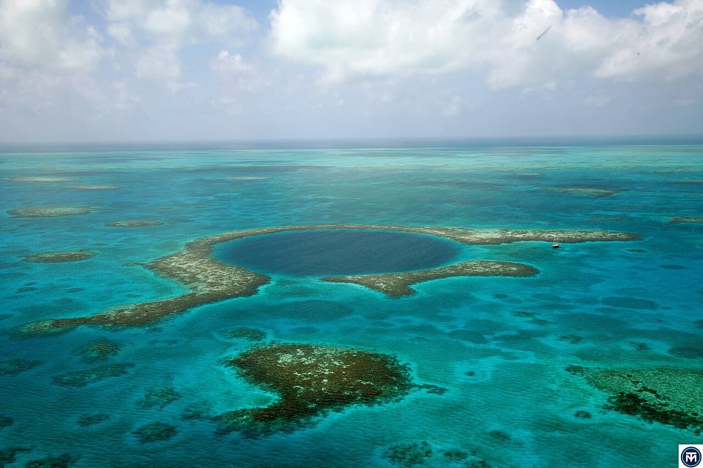

Great Blue Hole
Belize · plongée

Gouffre marin circulaire de 124 m de profondeur classé à l'UNESCO. Plongée mythique parmi stalactites et requins, réservée aux confirmés.
- Lieu
- Belize
- Niveau
- Expert
- Activités
- plongée
- Type d'eau
- Mer / océan
- Coordonnées
- 17.32, -87.53 (position approximative du secteur)
Dangers à connaître
- Profondeur extrême : narcose et paliers obligatoires.
- Requins de récif en profondeur.
Le conseil d'Ocean Buddy
Plongée technique : brevet avancé et centre encadrant indispensables.
Ouvrir dans Ocean Buddy Télécharger sur l'App Store
Source : Description historique Ocean Buddy · vérification externe en attente.